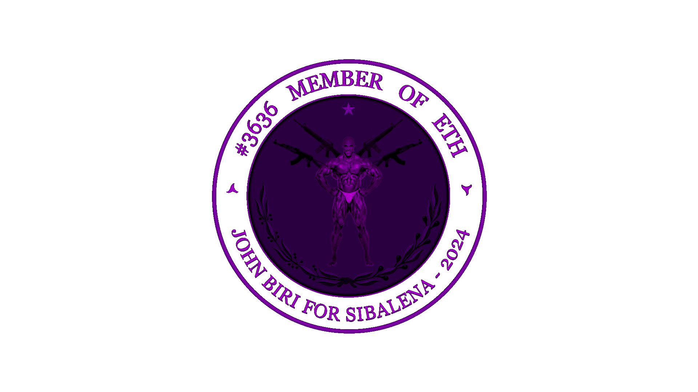

Um espaço dedicado para reflexões
“A água nunca discute com os obstáculos — ela os contorna. Nunca tenta impor sua forma — ela se adapta. Se a colocas em um copo, ela vira o copo; se a despejas em um rio, ela se torna correnteza. Bruce Lee não dizia isso como um truque de luta ou uma metáfora vazia, mas como um caminho de sabedoria. Ser como a água é reconhecer que rigidez quebra, enquanto flexibilidade sobrevive. A vida te joga pedras, e tu tens duas escolhas: endurecer e rachar, ou fluir ao redor delas, como quem dança com o inevitável. O segredo está em não resistir à mudança, mas em transformar-se com ela. Ser firme na essência, mas maleável na forma. A água é humilde, nunca disputa espaço, mas sempre encontra seu lugar. Se escutares com atenção, ouvirás nela o silêncio dos que não precisam gritar para ser fortes.”
“Quando a vida te pressiona, qual tua reação? Muitos endurecem, se armam, criam muralhas. Mas a sabedoria da água é o oposto disso: ela cede sem perder sua essência. Bruce Lee entendeu que lutar contra tudo é gastar energia com o que não merece tua fúria. A água não perde tempo com muros — ela escava lentamente até atravessá-los. Ser como ela é aceitar o que não se pode controlar e agir onde se tem poder. É saber quando avançar com força e quando recuar com inteligência. Há um tipo de força que não se vê nos músculos, mas no espírito que não se abala. A água não se mostra poderosa gritando; ela destrói montanhas com paciência. E essa é a força que precisamos cultivar: a que não se impõe, mas transforma.”
“Num mundo que exige máscaras e poses, ser como a água é um ato de rebeldia. Porque ela não finge ser o que não é. Ela é transparente, fluida, honesta em cada movimento. Muitos vivem tentando se encaixar, esquecendo que a forma vem depois da essência. A água nos ensina que é melhor ser sincero e incompreendido do que moldado pelos medos dos outros. Quem vive em conflito com sua própria natureza está sempre em guerra. Mas quem se aceita, quem se entende como fluido, impermanente, vivo — esse encontra paz. E não confunda paz com passividade: a água pode ser serena, mas também pode ser tempestade. O equilíbrio está em saber ser ambos, sem se perder de si mesmo.”
“Bruce Lee dizia que a água pode fluir ou destruir. Isso não é só sobre artes marciais — é sobre a vida. Há momentos de leveza, em que tudo pede delicadeza. E há instantes em que é preciso ruir estruturas, transbordar, romper barragens internas. Ser como a água é ter coragem de mudar de estado. É saber que tua natureza não é estática. Somos rio, não pedra. Somos movimento, não estátua. E enquanto te agarras ao que já foi, deixas de viver o que poderia ser. A água não guarda rancores, não volta atrás. Ela segue. E seguir é o que nos torna vivos. Quem entende isso, vive com liberdade. Porque sabe que pode cair mil vezes, evaporar sob o sol, congelar no frio — mas nunca deixará de ser quem é: essência pura em constante reinvenção.”
“Ser como a água é mais que uma filosofia bonita — é um chamado para viver com verdade. Para parar de resistir à própria natureza. Para fluir com o tempo, com os ciclos, com os erros e acertos. É aceitar que a vida não é sobre controlar tudo, mas sobre se tornar tão adaptável que nada te paralisa. A água não teme o fogo, não foge do frio, não se esconde da queda. Ela simplesmente... continua. E talvez esse seja o maior ensinamento: continuar. Mesmo quando tudo diz que é hora de parar. Porque no fim das contas, a vida não espera por quem hesita. Mas ela respeita profundamente quem, como a água, se move com intenção, com propósito, com alma. Então flui, irmão. Mas flui consciente. Flui desperto. Flui com coragem.” — Bruce Lee, espírito em fluxo
“É parte da cura o desejo de ser curado. A vida não é curta, como dizem - nós é que a tornamos assim, desperdiçando-a com preocupações vazias, buscando o que não importa e ignorando o que é essencial. Somos cuidadosos com moedas, mas esbanjamos horas. Vivemos como se nunca fôssemos morrer e morremos como se nunca tivéssemos vivido. Olha bem para teus dias: quantos deles foram teus de verdade? Quantos foram arrastados por vontades alheias ou afogados em distrações inúteis?”
“Quem não sabe o que busca na vida é jogado como um navio sem leme, à mercê de qualquer vento. A filosofia não é um adorno para conversas bonitas, é um escudo contra o caos, um remédio para a alma doente. Não reclames da dificuldade do caminho - ela é o caminho. O que te desafia, te molda. O que te fere, te desperta. Sofrer com propósito é melhor do que viver anestesiado pela ignorância.”
“Te perguntaste hoje o que realmente controlas? Não são os outros, nem o destino, nem os aplausos ou vaias. É tua mente, tua atitude, teu caráter. Quando entenderes isso, serás inabalável como uma rocha em meio à tempestade. Não se trata de apagar emoções, mas de domá-las, não ser escravo do que sente, mas senhor do que pensa. A liberdade começa quando deixas de culpar o mundo e assumes tua alma.”
“Lembra-te: cada dia pode ser o último, e isso não é motivo de medo, mas de urgência. Vive com intenção. Fala com verdade. Ama com coragem. E morre, se preciso for, sem arrependimentos. A vida é um empréstimo dos deuses, e honrar esse presente é viver com virtude, serenidade e força. O tempo passa - que ao menos tu passes com ele como um homem desperto.” - Sêneca, Epicteto e Marco Aurélio, em uníssono
Aqui ficará registrado as coisas que criei, mudei ou exclui do BLOG.